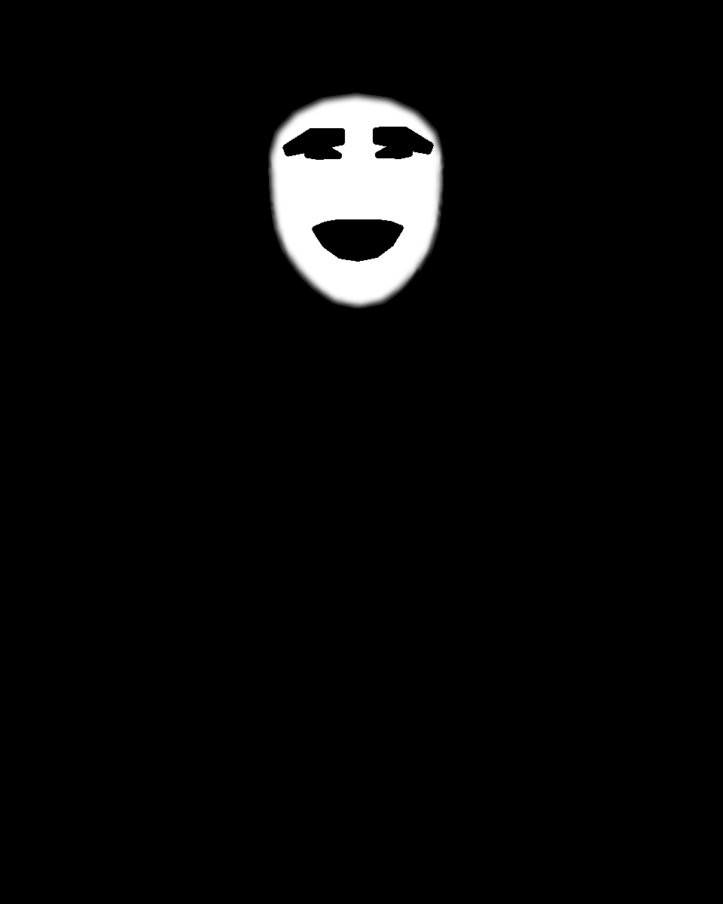

TEMP PoC Physical device Vision only
Classical face retouch on physical iPhone
Separate from the simulator / macOS compare report. Swift + React Native (studio-next) Vision results from USB test iPhone 8.
Live progress
Auto-refreshing checklist: live.html
Swift Vision on device — PASS
face_width_px_min ≈ 225.77 (matches Python ~225.6 / macOS CLI ~226.07; simulator quirk was ~73).
faces=1 · detect_ms≈433 · total_ms≈68639 · diff vs Python golden mean_abs≈0.089 max 55
RN / studio-next Vision on device — in progress
Awaiting Mac Shell overnight runbook (build + install + Documents pull). Same geometry gate: face_width ≈ 226.
Obama — face_width_px_min
| Arm | face_width | Notes |
|---|---|---|
| Python golden | 225.6 | reference |
| macOS CLI Vision | ≈ 226.07 | same Vision + ClassicalRetouchCore |
| Device Swift Vision (test iPhone 8) | 225.77 | PASS vs Python/macOS |
| Simulator Vision (historical) | ≈ 73 | CPU-only quirk — not a geometry gate |
| Device RN / studio-next Vision | — | pending overnight Mac run |
Device
| Label | test iPhone 8 (USB) |
|---|---|
| Model | iPhone 8 |
| iOS | 16.7.x |
| Landmarker | Apple Vision (no MediaPipe) |
Swift device artifacts
report.json · metrics.json · mask below (strip.png pending Mac copy)
